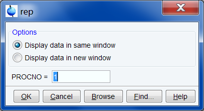

re, rep, rew, repw
NAME
re - Read data of specified name or expno (nD)
rep - Read data of specified procno (nD)
rew - Read data of specified name/expno in new window (nD)
repw - Read data of specified procno in new window (nD)
DESCRIPTION
The commands re and rew allow you to read and display a new data set. They open a dialog box with the corresponding option selected:
These options are:
Display data in same window
Selects the command re for execution. It reads the specified data set in the current data window.
Display data in new window
Selects the command rew for execution. It reads the specified data set in a new data window.
Specify the data path variables. A full data path is:
<dir>/data/<user>/nmr/<name>/<expno>/pdata/<procno>
re replaces the data set in the current data window (if it exists).
The data path variables can also be specified on the command line. In this case, the dialog box is not opened and the missing data path variables are taken from the current data set. Examples:
re <name>
re <expno>
re <name> <expno>
re <expno> <procno>
re <name> <expno> <procno>
re <name> <expno> <procno> <dir> <user>
Alternatively, re and rew can be entered with an alias name as argument, i.e.:
re <aliasname>
Note that the first alphanumeric argument is always interpreted as the name (or alias name) and the first numeric argument as experiment number.
The commands rep and repw allow you to read and display a new processed data number (procno) of the current data set. They open a dialog box with the corresponding option:
Display data in same window
Selects the command rep for execution. It reads the specified PROCNO in the current data window.

Display data in new window
Selects the command repw for execution. It reads the specified PROCNO in a new data window.

The destination procno can also be specified on the command line, e.g.: rep 77
INPUT FILES
For re and rew:
<dir>/data/<user>/nmr/<name1D>/<expno>/
fid - 1D raw data
acqu - acquisition parameters
acqus - acquisition status parameters
For re, rew, rep and repw:
<dir>/data/<user>/nmr/<name1D>/<expno>/pdata/<procno>/
1r, 1i - processed 1D data
proc - processing parameters
procs - processing status parameters
Note that these are only the main files of a 1D dataset.
OUTPUT FILES
<tshome>/prog/curdir/<user>/
curdat - current data definition
USAGE IN AU PROGRAMS
RE(name)